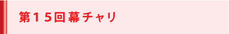
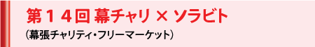
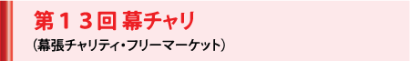
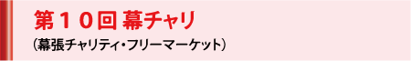
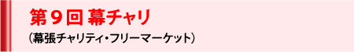
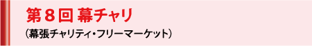
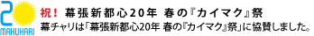

第15回幕チャリ（2019年5月） 報告と御礼
＜東日本大震災復興支援 緊急 幕チャリ＞
「幕チャリ＠浜風祭」の開催実績は こちら へ

大変遅くなってしまいましたが、皆さま方のご支援ご協力により、2019年5月19日(日)に本学キャンパスにて「第15回幕チャリ」を開催することができました。
お陰様で、売上と寄付金の総額は432,261円となりました。
このうち、217,086円を「公益信託アジア・コミュニティ・トラスト」に寄付し、アジアの自立に向けた持続支援のために役立ててまいります。
開催日は天気にも恵まれ、多くの地域住民、関係者の方々にもお越しいただきました。
出店や寄付品を始め、多くの皆さまにご支援をいただいたおかげで、盛況に終えることができました。
今年度はキャンドル作成やラグビー教室、といった体験型チャリティにも力を入れ、多くの子供たちにご参加いただくことができました。
今年も幕チャリへのご理解、ご協力、ご参加を賜り、ありがとうございました。
2019年11月
学生ボランティア団体「神田外語大学CUP」一同
「代表 鈴木 友裕

皆様方のご支援とご協力のもと、5月27日（日）に 「第14回幕チャリ×ソラビト」を無事開催することができました。
本年は、従来からの「幕張チャリティ・フリーマーケット（幕チャリ）」に加えて、学生がより主体性を発揮し、各人のPowers(創造性・特技・想いなど)で新たなPowerを生み出す「つながれソラビト！Gathering of Sky Walkers」を新たに同時展開しました。
また、神田外語大学による「第2回コミュニティ・オープン・デイ」、神田外語大学ボランティアセンターによる「ボランティア・シンポジウム～平昌から東京へ～」、テクノロジーを活用して社会の課題解決をめざす「Civic Tech Meetup in Chiba 2018」、千葉県内の国際交流・協力団体などが日頃の活動を紹介する「国際フェスタCHIBA」も同時開催され、協働の場としての役目も果たすことができました。
当日は天候にも恵まれ、皆様からご提供いただいた寄付品を販売するフリーマーケットやオークションでは約60名の学生ボランティアが集い、また、「ソラビト」として自ら企画し運営に踏み出した学生も約60名と、のべ120名の学生が力を合わせて汗を流しました。「ソラビト」企画では、震災復興支援としての物産直販、海洋保護、ハンドスタンプ、幕張の地域おこしをめざすカレーの競演、チャリティ屋台、パラリンピック競技やスケートボードなどの体験、キッズ・ワールド、各種パフォーマンスなどが多彩に展開され、1日で約1,500名のお客様をお迎えすることができました。
今回も、従来からの幕チャリの核心であるチャリティ精神を受け継ぎ、地域社会や企業とのつながりを一層強化し、「誰もが気軽に楽しくできる社会貢献」の実現をめざしました。幕チャリでの売上に加えて、今回は、生み出したPowerをより広くシェアする趣旨から「ソラビト」たちにも寄付を募った結果、売上金と寄付金の総額は約36万円となりました。このうち30万円は「公益信託アジア・コミュニティ・トラスト」へ寄付し、アジアの自立に向けた持続支援のために役立ててまいります。また東日本大震災復興支援としての「応援買い」売上約6万円は被災地で活用していただきます。
様々なセクターの壁を越えて、道のない「ソラ（空）」を自由に飛翔する「ヒト（人）」が自在にグローバルに繋がることで、新たなアイディアを紡ぎ、誰かの役に立つ――今後もこの目標は変わりません。ボランティア精神を共有することで、学生、大学、地域、企業の繋がりを広げ、それぞれのPowerによる化学変化で新たなPowerをさらに生み出せていければと思います。
「第14回幕チャリ×ソラビト」という新たな挑戦に対し、多くの方々からいただいたご助言やご協力に心より御礼申し上げます。ありがとうございました。
2018年6月
学生ボランティア団体「神田外語大学CUP」一同 代表 後藤 麻里
「ソラビト実行委員会」一同 代表 伊澤 美波

2017年5月27日(土)に本学キャンパスにて皆様方のご支援とご協力により、第13回「幕張チャリティ・フリーマーケット（幕チャリ）」を無事に開催することができました。
本年は昨年同様1日のみの開催となりましたが、天候に恵まれ、皆様からご提供いただいた寄付品を販売するフリーマーケットでは、約50名のボランティアが力を合わせて共に汗を流しました。加えて、恒例のチャリティ・オークションや、本学の学生・教職員や近隣地域の方々によるチャリティ屋台、パフォーマンスなども開催され、学内外からの多くのボランティアの方々にもご協力いただきました。
また、神田外語大学ボランティアセンターと学内ボランティア団体による「ボランティアフェア2017」、千葉県内の国際交流・協力団体などが日頃の活動を紹介する「国際フェスタCHIBA」も同時開催され、協働の場としての役目も果たすことができました。
さらに、東日本大震災復興への継続支援ならびに熊本地震復興支援として、物産の直販や募金も実施され、1日でおよそ1,400名のお客様をお迎えすることができました。
幕チャリは色々な想いが飛び交う場です。運営する側、協力してくださる皆様、そしてご来場いただいた方々と、それぞれに幕チャリの楽しさなどを十人十色で感じていただきたく、今回のテーマは「感じろ！」としました。みなさま、幕チャリで何を感じていただけましたでしょうか。
お陰様で、売上と寄付金の総額は約43万円となりました。このうち25万円を「公益信託アジア・コミュニティ・トラスト」へ寄付し、アジアの自立に向けた持続支援のために役立ててまいります。また、東日本大震災復興に向けた継続支援として「応援買い」売上約6万円は被災地で活用していただき、さらに熊本地震復興支援として122,335円を熊本県益城町に寄付しました。
今回の幕チャリも、多くの方面からいただいたご助言やご協力によって開催することができました。心より御礼申し上げます。
2017年9月
学生ボランティア団体「神田外語大学CUP」一同
代表 島田 莉奈
皆様方のご支援とご協力により、2016年5月29日(日)に本学キャンパスにて第12回「幕張チャリティ・フリーマーケット（幕チャリ）」を無事に開催することができました。
本年は1日のみの開催となりましたが、天候に恵まれ、皆様からご提供いただいた寄付品を販売するフリーマーケットでは、約65名のボランティアが力を合わせて共に汗を流しました。加えて、恒例のチャリティ・オークションや、本学の学生・教職員や近隣地域の方々によるチャリティ屋台、パフォーマンスなども開催され、学内外からの多くのボランティアの方々にもご協力いただきました。
また、神田外語大学ボランティアセンターと学内ボランティア団体による「ボランティアフェア2016」、千葉県内の国際交流・協力団体などが日頃の活動を紹介する「国際フェスタCHIBA」も同時開催され、協働の場としての役目も果たすことができました。
さらに、東日本大震災復興への継続支援ならびに熊本地震復旧への緊急支援として、物産の直販や募金も実施され、1日でおよそ1,350名のお客様をお迎えすることができました。
今回のテーマは「はじめの一歩」としました。これは、幕チャリを通して、幕チャリの掲げる「3つの寄付」である①物の寄付、②お金の寄付、③時間の寄付に携わることにより、形や規模が違っても一人一人のボランティア活動が社会貢献につながるというメッセージを込めて選びました。
お陰様で、売上と寄付金の総額は約71万円となりました。このうち、28万円を「公益信託アジア・コミュニティ・トラスト」へ寄付し、アジアの自立に向けた持続支援（12年目）のために役立ててまいります。また、東日本大震災復興に向けた継続支援（5年目）として、「応援買い」売上の約21万円は被災地に持ち帰っていただき、さらに今年は、熊本地震復旧への緊急支援として221,214円を日本赤十字社義捐金及び日本財団ボランティア活動資金へ寄付し、現地で活用していただきます。
今回の幕チャリも、多くの方面からいただいた助言やご協力によって開催することができました。心より御礼申し上げます。今後ともご支援・ご協力をよろしくお願い申し上げます。
2016年7月
学生ボランティア団体「神田外語大学CUP」一同
代表 古川 和樹
■大学で公益信託Asian Community Trust（ACT）への寄付金目録贈呈式が行われました
（2016年9月21日）
2015年5月23日（土）・24日(日)の両日、皆様方のご支援とご協力により、第11回「幕張チャリティ・フリーマーケット（幕チャリ）」を、本学キャンパスにて無事に開催することができました。
両日とも晴天に恵まれ、皆様からご提供いただいた寄付品を販売するフリーマーケットエリアでは、約150名のボランティアが力を合わせて共に汗を流しました。加えて、恒例のチャリティ・オークションや、本学の学生・教職員や近隣地域の方々によるチャリティ屋台・パフォーマンスなど、学内外から多くのボランティアにご参加いただき、幕チャリを盛り上げていただきました。
また、神田外語大学ボランティアセンターと学内ボランティア団体による「ボランティアフェア2015」、千葉県内の国際交流・協力団体などが日頃の活動を紹介する「国際フェスタCHIBA」も同時開催され、協働の場としての役目も果たすことができました。
さらに「3.11を忘れない」の精神のもとに、東日本大震災からの復興支援ならびにネパール大震災への緊急支援として、福島県・宮城県の物産の直販や募金も実施され、2日間でおよそ2,400人のお客様をお迎えすることができました。
今回のテーマは「TOMODACHI～幕張（ここ）から創る世界の輪～」となりました。これは幕チャリで時を共にするすべての人々が、このイベントを通じて寄付先のアジア諸国の現状を知り、人々の努力を知り、対等な立場の「TOMODACHI（友だち）」となって応援することで、チャリティをより身近に感じられるようにとの願いを込めて選びました。
お陰様でこのテーマには多くのご賛同をいただき、売上と寄付金の総額は約132万円となりました。このうち、震災復興支援の「応援買い」売上約43万円は被災地に持ち帰っていただき、ネパール大地震緊急支援の寄付金132,500円は「特定非営利活動法人アジア・コミュニティー・センター21（ACC21)」を通じて現地へ送金しました。
フリーマーケットとチャリティ・オークションの売上げおよび各協働団体からの寄付金計76万円には、昨年11月の本学「浜風祭」及び千葉工業大学「津田沼祭」で売り上げ6万円を加え、計82万円を「公益信託アジア・コミュニティ・トラスト」へ寄付し、アジアの自助努力支援のために役立ててまいります。
今回の幕チャリも、多くの方面からいただいた助言やご協力によって開催することができました。心より御礼申し上げます。来年の開催に向けて幕チャリはすでに準備を始めております。今後ともご支援・ご協力をよろしくお願い申し上げます。
2015年5月
学生ボランティア団体「神田外語大学CUP」一同
代表 小林 裕也

2014年5月17日（土）・18日（日）の両日、皆様方のご支援とご協力により、第10回「幕張チャリティ・フリーマーケット（幕チャリ）」を、神田外語大学キャンパスにて無事に開催することができました。
両日とも晴天に恵まれ、皆様からご提供いただいた寄付品を販売するフリーマーケットエリアでは、約110名のボランティアが力を合わせて共に汗を流しました。加えて、恒例のチャリティ・オークションや、本学の学生・教職員や近隣地域・企業の方々によるチャリティ屋台やパフォーマンスなど、学内外から多くのボランティアにご参加いただき、幕チャリを盛り上げていただきました。
また、神田外語大学ボランティアセンターによる「ボランティアフェスタ」、学内ボランティア団体による「MAKE SMILE～こどもえいごプロジェクト～」、千葉市環境局と「ちばくりん」によるゴミ分別の啓蒙活動も同時開催され、協働の場としての役目も果たすことができました。
さらに、「3.11を忘れない」の精神のもと、東日本大震災からの復興支援として福島県・宮城県の物産の直販・即売も実施され、2日間でおよそ2,000人のお客様をお迎えすることができました。
幕チャリが10回という節目の年を迎えることができましたのも、ひとえに皆様のご支援とご協力の賜物です。そこで、この「つながりの力」を大切にしたい、次の幕チャリにつなげたい、という願いから、今年のテーマは「幕チャリがつなぐ、幕チャリでつながる」とさせていただきました。
お陰様でこのテーマには多くのご賛同をいただき、売上と寄付金の総額は128万円となりました。このうち、震災復興支援として特設しました「応援買いエリア」での売上53万円は被災地に持ち帰っていただき、また、フリーマーケットとチャリティ・オークションの売上げおよび各協働団体からの寄付金の合計75万円は、公益信託「アジア・コミュニティ・トラスト」への寄付を通じてアジアの自助努力支援のために役立たせていただきます。
今回の幕チャリも、多くの方面からいただいた助言やご協力によって開催することができました。心より御礼申し上げます。来年の開催に向けて幕チャリはすでに準備を開始いたしました。今後ともご支援・ご協力をよろしくお願い申し上げます。
2014年6月
学生ボランティア団体「神田外語大学CUP」一同
代表 小川 加純

2013年5月18日（土）・19日(日)の両日、皆様方のご支援・ご協力により、第9回「幕張チャリティ・フリーマーケット（幕チャリ）」を、神田外語大学キャンパスにて無事に開催することができました。
天候が心配されておりましたが幸い両日とも晴天に恵まれ、皆様から頂きました数々の品物を、ボランティア約200名が共に汗を流しながら販売いたしました。今年も、チャリティ・フリーマーケットに加えて、恒例のチャリティ・オークションや学内外の皆様によるパフォーマンスや活動展示、さらには、多くの学生・先生・近隣地域・企業などの方々によるチャリティ屋台など、多彩なチャリティ活動が展開されました。また、18日には「第10回KUIS杯国際親善サッカー大会」、19日には「国際フェスタCHIBA」が同時開催され、大変盛況のうちに幕を閉じることが出来ました。さらに東日本大震災の被災地となった福島県・宮城県の物産の直販・即売も実施され、2日間で2,800人を超えるご来場の皆様方から大変なご好評を賜ることができました。
幕チャリがすべての方々にとって新たな社会貢献活動の始まり（原点）となるよう願いを込めて、今回のテーマには「原点～情熱は世界を変える～」を掲げさせていただきました。お陰様で、このテーマには多くのご賛同をいただき、売上と寄付金の総額は150万円となりました。このうち、震災復興支援として特設しました「応援買いエリア」での売上40万円は、被災地へ持ち帰っていただいて復興に役立てていただき、また、フリーマーケットとチャリティ・オークションの売上げ、および各協働団体からの寄付金の合計110万円は、公益信託「アジア・コミュニティ・トラスト（ACT）」への寄付を通じて、アジアの自助努力支援に役立てさせていただきます。
今回の幕チャリは、多くの方々の助言やご協力によって開催にこぎつけることができました。ご協力いただきました皆様には心より御礼申し上げます。
来年は幕チャリ10周年という節目となりますが、決して驕ることなく、しかし志は高く、活動を続けてまいりますので、今後ともご支援・ご協力のほど、よろしくお願い申しあげます。
2013年5月
学生ボランティア団体「神田外語大学ＣＵＰ」一同
代表 酒井 智行

2012年5月19日（土）・20日(日)の両日、皆様方のご支援・ご協力により、第８回「幕張チャリティ・フリーマーケット（幕チャリ）」を、神田外語大学キャンパスにて無事に開催することができました。
幸い両日とも絶好の晴天に恵まれ、皆様から頂きました数々の品物を、ボランティア約200名が共に汗を流しながら販売いたしました。今年も、チャリティ・フリーマーケットに加えて、恒例のチャリティ・オークションや学内外の皆様によるパフォーマンスや活動展示、さらには、多くの学生・先生・近隣地域・企業・同窓会などの方々によるチャリティ屋台など、多彩なチャリティ活動が展開されました。のみならず、東日本大震災の被災地となった福島県・宮城県の物産の直販・即売も実施され、2日間で約2,300人を数えたご来場の皆様方から大変なご好評を賜ることができました。
今年のテーマは「芽を育て 目を向ける」としました。そこには、昨年発生した東日本大震災からの復興支援の継続と、アジアの社会開発支援の再開の両方に取り組む決意を込めていました。お陰様で、このテーマには多くのご賛同をいただき、売上と寄付金の総額は217万円となりました。このうち、震災復興支援として特設しました「応援買い」コーナーでの売上107万円は、被災地へ持ち帰っていただいて復興に役立てていただき、また、フリーマーケットとチャリティ・オークションの売上げ、および各協働団体からの寄付金の合計110万円は、公益信託「アジア・コミュニティ・トラスト（ACT）」への寄付を通じて、アジアの社会開発支援に役立たせていただきます 。
今回の幕チャリは、企画・運営メンバーのほとんどが情熱はあっても経験のないところからスタートしましたが、多くの方々の助言やご協力によって開催にこぎつけることができました。ご協力いただきました皆様には心より御礼申し上げます。
来年以降も、幕チャリが一人ひとりの気づきの場になれるように活動を続けてまいりますので、今後ともご支援・ご協力のほど、よろしくお願い申しあげます
2012年6月
学生ボランティア団体「神田外語大学ＣＵＰ」一同
代表 渡辺 彰美
＜ご協力いただいた方々＞
●協働
神田外語大学・神田外語学院の在校生・教職員・同窓生の皆様
神田外語グループ＋神田外語大学同窓会+神田外語いしずゑ会
幕張地域の住民・商店会・企業の皆様＋幕張公民館＋幕張町内会＋幕張西公民館＋幕張西自治会＋幕張ベイタウンコア＋幕張ベイタウン自治連合会＋幕張ベイタウン商店会
幕張新都心賑わいづくり研究会
公益信託アジア・コミュニティ・トラスト(ACT)
●後援 千葉県＋千葉市
●運営協力 神田外語大学グローバル・コミュニケーション研究所（旧異文研）
●助言 和田純教授＋柳沼孝一郎教授
●「応援買い」「応援消費」で復興支援
福島県天栄村＋ブリティシュヒルズ＋石巻元気復興センター＋和田ゼミ社会起業研究会＋稲毛商店街振興組合＋(株)街づくりまんぼう＋Power of Japan
●チャリティ・フリーマーケット／オークション
協賛／協力：
学外団体：アパホテル＆リゾート＜東京ベイ幕張＞＋イオンリテール(株)＋（株）キッツ＋キヤノンマーケティングジャパン(株)＋京成バス(株)船橋営業所＋シャープ(株)＋セイコーインスツル(株)＋全米大学連盟IES Abroad東京留学センター＋千葉ジェッツ＋千葉県企業庁＋千葉・幕張情報ブログコミュニティ「マクスタ」＋(株)千葉ロッテマリーンズ＋東京ガスファシリティサービス(株)＋東京美装興業(株)スーク海浜幕張＋ＮＴＴ都市開発グループ＋ブリティシュヒルズ＋富士通(株) ＋ホテルグリーンタワー幕張＋(株)幕張テクノガーデン＋(株)幕張メッセ＋丸善(株)＋三井不動産ビルマネジメント(株)(ワールドビジネスガーデン)＋リトルハウス(株)＋ロジコムコーポレーション(株)
学内団体：DAWN KUIS＋Re:Japan
広報：
(株)アイエイシイトラベル＋イオン(株)＋角川シネプレックス幕張＋429.post＋私立市原中央高等学校＋(株)スタートトゥデイ＋タリーズコーヒー海浜幕張店＋千葉経済大学附属高等学校＋千葉県立匝瑳高等学校＋千葉県立千葉西高等学校＋千葉市立海浜打瀬小学校＋LUNCH DELI＋ローソン市原五所店
●チャリティ屋台村：
学外団体：SII労働組合幕張支部有志＋千葉・幕張情報ブログコミュニティ「マクスタ」
学内団体：Amor do Brasil(ポルトガル語専攻有志)＋Team T-Lunch＋ELI COOKIES＆CAKES＋Habitat for Humanity KUIS＋ポンカレー(タイ語専攻学生)＋幕張新都心賑わいづくり研究会学生部
●チャリティ・イベント：
学外団体：京成バス(株)船橋営業所＋チーバくん＋ボーカル・バンド「唱頂の大員」＋ベイタウン中年バンド「幕張ケリー」＋マーくん／M☆Splash!!
学内団体：国際親善サッカー大会＋CLAP! CLAP!!＋心(Shin)(yosakoi ソーラン踊り)＋Rock Tribe研究会
●広報制作
小澤周平（デザイン）＋柏倉悠倖（ロゴ）＋露﨑エリ香＋蛭田麻里沙（一部順不同）
2011年5月21日（土）・22日(日)、皆様方のご支援・ご協力により、「東日本復興支援 緊急幕チャリ（第７回幕張チャリティ・フリーマーケット）」を、神田外語大学キャンパスにて無事に開催することができました。
天候も心配されましたが、幸いにも両日とも晴天に恵まれ、皆様から頂きました数々の品物を、ボランティア約400名が共に汗を流しながら販売いたしました。今年も、チャリティ・フリーマーケットに加えて、恒例のチャリティ・オークションや学内外の皆様によるパフォーマンスや活動展示、さらには、多くの学生・先生・近隣地域・企業・同窓会などの方々によるチャリティ屋台など、多彩なチャリティ活動が展開されました。のみならず、風評被害と闘う福島県天栄村による物産直販も実施され、2日間で約3,800人を数えたご来場の皆様方から大変なご好評を賜ることができました。
最終的には、205万円を神田外語グループが行う「東日本大震災復興教育支援活動」に寄付することができました。この度の震災では小中学校をはじめ教育の現場でも様々な形で被災し、大きな影響が出ています。今夏には学生ボランティアが宮城、福島、茨城、千葉の被災地の小中学校や仮設住宅を訪問し、英語活動を中心とした教育サポートを行う予定です。活動の詳細については、神田外語グループの「東日本大震災復興支援プロジェクト」ホームページをご覧下さい。
今回の幕チャリは、東日本大震災の復興支援のために「今私たちにできること」を必ずやろうという強い思いから始まりました。「3.11を忘れない」が合言葉に、「誰もが誰かの役にたつ」が信念になりました。しかし、準備期間がわずか2カ月という慌ただしい中で、このように大規模な幕チャリの開催が実現できましたのは、ひとえに、皆様方のご支援・ご協力の賜物にほかなりません。心より感謝申し上げます。
私たちは、これからも、震災復興支援の活動を続けていきたいと思います。と同時に、従来から継続してきたアジアにおける自立支援も継続していくつもりです。一人でも多くの人々の笑顔のために、一人ひとりが「今、私たちにできること」を考え、幕チャリは活動してまいりますので、今後ともご支援・ご協力のほど、よろしくお願いいたします。
2011年7月
学生ボランティア団体「神田外語大学ＣＵＰ」一同
代表 小川 愛美
＜ご協力いただいた方々＞
●協働
神田外語大学・神田外語学院の在校生・教職員・同窓生の皆様
神田外語グループ（神田外語大学／神田外語学院／神田外語キャリアカレッジ／神田外語キッズクラブ／神田外語アソシエイツ／ブリティッシュヒルズ）；神田外語大学同窓会＋神田外語いしずゑ会
幕張地域の住民・商店会・企業の皆様＋幕張公民館＋幕張町内会＋幕張西公民館＋幕張西自治会＋幕張ベイタウンコア＋幕張ベイタウン自治連合会＋幕張ベイタウン商店会
幕張新都心賑わいづくり研究会
福島県天栄村
●後援 千葉県＋千葉市
●運営協力 神田外語大学異文化コミュニケーション研究所
●助言 和田純教授＋柳沼孝一郎教授
●チャリティ・フリーマーケット／オークション
協賛／協力：
学外団体：イオンリテール(株)＋キヤノンマーケティングジャパン(株)＋セイコーインスツル(株)＋全米大学連盟IES Abroad東京留学センター＋千葉県企業庁＋(株)千葉ロッテマリーンズ＋つるかめランド幕張店＋東京美装興業(株)スーク海浜幕張＋ブリティシュヒルズ＋富士通(株)＋ホテルグリーンタワー幕張＋ホテルスプリングス幕張＋(株)幕張メッセ＋丸善(株)＋三井不動産ビルマネジメント(株)(ワールドビジネスガーデン)＋リトルハウス(株)＋ロジコムコーポレーション(株)＋(株)ユニポスト
学内団体：青山・柳沼ゼミ有志＋ecoism＋KUISチャリティカップ＋DAWN KUIS
広報：
(株)アイエイシイトラベル＋イオン(株)＋イオンリテール(株)＋市原中央高等学校＋NTT都市開発(株)＋NTTフレッツサイトひかり情報局＋海浜打瀬小学校＋神田インターナショナルドミトリー＋(株)キッツ＋京成バス(株)船橋営業所＋429.post＋昭和学院秀英高等学校＋千葉市立稲毛高等学校＋千葉県立検見川高等学校＋千葉県立匝瑳高等学校＋千葉市立千葉高等学校＋千葉県立千葉女子高等学校＋千葉県立千葉西高等学校＋千葉県立成田国際高等学校＋千葉県立松戸国際高等学校＋幕張メッセアミューズモール店＋丸善(株)＋美浜打瀬小学校
●チャリティ屋台村：
学外団体：SII労働組合幕張支部有志＋マクスタ＋National Licensed Guide Interpreter ”ANGELS（エンジェルス）”
学内団体：OI’ｍO～あいむ～＋Amor do Brasil（ポルトガル語専攻有志）＋ELI COOKIES＆CAKES＋神田外語大学同窓会＋神田外語大学留学生会＋サワディーカレー（タイ語専攻学生）＋Team T-Lunch ＋Habitat for Humanity KUIS
●チャリティ・イベント：
学外団体：チーバくん＋ボーカル・バンド「唱頂の大員」＋ベイタウン中年バンド「幕張ケリー」
学内団体：国際親善サッカー大会＆東北支援チャリティ･プロジェクト（Kalb al akrab／テコンドー愛好会／HOA ALOHA／ムルデカ／LAS☆BAKANDAS）＋SWING GANG JAZZ研究会＋Step In
●「3.11を忘れない」缶バッヂ制作提供：和田ゼミ社会起業研究会
●デザイン
佐藤謙（ポスター／フライヤー／缶バッジ／リーフレット）＋高橋夏希（ロゴ）＋野瀬晶世（リーフレット）（読み下し50音順）
■大学HPに開催の記事が掲載されました。
5月15日（土）・16日(日)、皆様方の有形無形のご支援・ご協力により、「第６回幕チャリ（幕張チャリティ・フリーマーケット）」を神田外語大学キャンパスにて無事に開催することができました
両日とも絶好の晴天に恵まれ、爽やかな新緑と青空の下、皆様から頂きました数々の品物を、ボランティア約150名が共に汗を流しながら販売いたしました。今年も、「チャリティ・フリーマーケット」に加えて、恒例のオークション、学生・先生・近隣地域・企業の方々有志による食品販売、各種パフォーマンスなどが多彩に展開され、2,600人を数えるご来場者の皆様方から大変なご好評を賜ることができました。
お陰様をもちまして、売上金に寄付金を加えた総額は151万円にのぼりました。この全額は、アジアの人々が社会開発・教育の充実、医療福祉の向上・環境の保全などを目指して展開する自助努力を支援すべく、公益信託「アジア・コミュニティ・トラスト（ACT）」へ寄付させていただきます。
第６回「幕チャリ」は、国境・人種・年齢・性別など、あらゆる区分された領域を『超える』をモットーとして活動してきました。誰もが気軽に社会的役割を担える場を提供し、多くの人々と共に手を取り合い、新たな世界の創造を目指して、笑顔のあふれる2日間となりました。今回の盛況も、ひとえに皆様方のご支援のお蔭と、心から感謝申しあげます。
一人一人の小さな力の持ち寄りが大きな社会変革への道を拓き、「幕チャリ」が世界につながる幕張の大イベントとしてさらに成長するよう、今後も持続的に地域貢献・国際貢献をしていく所存です。これからも、変わらぬご支援、ご協力のほど、よろしくお願い申し上げます。
2010年6月
神田外語大学ＣＵＰ一同
（代表 浜中 望帆）
＜ご協力いただいた方々＞
●協力 神田外語大学＋幕張新都心まちづくり協議会＋幕張新都心賑わいづくり研究会
●後援 千葉県＋千葉市
●学内協力 神田外語大学事務局＋異文化コミュニケーション研究所
在学生＋教職員＋同窓会の皆様
学校法人佐野学園＋神田外語いしずゑ会
和田ゼミ社会起業研究会＋国際親善サッカー大会事務局
●学内助言 和田純教授＋柳沼孝一郎教授
●助成 神田外語大学学生団体支援制度
●ご協力いただいた地域の皆様
幕張公民館＋幕張町内会＋幕張西公民館＋幕張西自治会
幕張ベイタウンコア＋幕張ベイタウン自治連合会＋幕張ベイタウン商店会
●ご協力いただいた企業・商店などの皆様
協賛： イオンマルシェ（株）カルフール幕張店＋イオンリテール（株）＋NTT都市開発ビルサービス（株）＋（株）かねたやルームデコ幕張新都心店＋（株）キッツ＋キヤノンマーケティングジャパン（株）＋シネプレックス幕張＋シャープ（株）＋（株）新昭和＋（株）スタートトゥディ＋セイコーインスツル（株）＋タリーズコーヒー海浜幕張店＋千葉県企業庁＋（株）千葉ロッテマリーンズ＋東京ガス（株）＋東京美装興業（株）（りそな銀行）＋日本アイ・ビー・エム総務サービス（株）＋（株）ファソテック＋富士通（株）＋（株）ブリティッシュヒルズ＋ホテルグリーンタワー幕張＋ホテル ザ・マンハッタン＋（株）ホテルニューオータニ 幕張＋（株）幕張テクノガーデン＋（株）幕張メッセ＋三井不動産ビルマネジメント（株）（ワールドビジネスガーデン）＋メイプルイン幕張＋ららぽーとマネジメント（株）（三井アウトレットパーク）＋リトルハウス（株）＋ロジコムコーポレーション（株）
協力： (株)アイエイシイトラベル＋市原中央高等学校＋稲毛新聞＋打瀬小学校＋打瀬中学校＋大谷学園 横浜隼人高等学校＋海浜打瀬小学校＋(株)かねたやルームデコ幕張新都心店＋神田外語学院＋(株)キッツ＋京成バス(株)船橋営業所＋４２９(しずく)＋昭和学院秀英高等学校＋スターツアメニティー(株)＋千葉県立磯辺高等学校＋千葉県立検見川高等学校＋千葉県立匝瑳高等学校＋千葉県立千葉女子高等学校＋千葉県立千葉西高等学校＋千葉県立成田国際高等高校＋千葉県立千葉南高等学校＋千葉県立幕張総合高等学校＋千葉県立松戸国際高等学校＋千葉市立稲毛高等学校＋千葉市立千葉高等学校＋ちば菜の花ニュース＋東京都立飛鳥高等学校＋日本アイ・ビー・エム総務サービス(株)＋ぶらりネットCHIBA＋幕張メッセアミューズモール店＋美浜打瀬小学校＋ららぽーとマネジメント(株)(三井アウトレットパーク)
●販売協力： IES全米大学連盟東京留学センター留学生
●パフォーマンス協力
地域団体： 高浜第一小学校「SAMURAI×浜っ子×利ゑ蔵」＋千葉ロッテマリーンズ専属チアパフォーマー｢M☆Splash!!｣＋ベイタウン中年バンド
学内団体： KUIS Singing Club＋Step In＋ドントリータイ愛好会・ラムタイ同好会＋Rock Tribe研究会＋わん
●フード協力
地域団体： SII労働組合幕張支部有志＋マクスタ
学内団体： OI’mO～あいむ～＋神田外語大学同窓会＋神田外語大学留学生会
●展示協力
寄付先： 公益信託アジア・コミュニティ・トラスト（ACT）
学内団体： ecoism＋DAWN KUIS＋Habitat for Humanity KUIS＋和田ゼミ社会起業研究会
●学内広報協力： PUBフリーペーパー愛好会
●デザイン： 齋藤友貴 二瓶恵（読み下し50音順）
■売上金151万円をACTに寄付しました。 詳細は こちら へ
５月１６日(土)・１７日(日)の両日、皆様方の有形無形のご支援により「第５回幕チャリ（幕張チャリティ・フリーマーケット）」を神田外語大学キャンパスにて無事に開催することができました。
天候不順の中、２日目は幕チャリ初となる屋内での開催となりましたが、両日とも大変な賑わいとなり、皆様から頂きました数多くの品々をボランティア約２００名が楽しみながら販売致しました。今年も、「チャリティ・フリーマーケット」に加えて、恒例のオークション、地元の名産品や食品の販売、各種パフォーマンスなども大変なご好評をいただき、来場者は２,３００人を数え、売上および寄付金の総計は１８４万円という昨年に匹敵する成果をあげることができました。
売上金および寄付金は、アジアの人々が社会開発・教育の充実、医療福祉の向上・環境の保全などを目指して展開する自助努力を支援すべく、公益信託「アジア・コミュニティ・トラスト（ACT）」へ全額寄付させていただきます。
今回は５周年という節目を迎えるにあたり、『伝える・伝わる・つながる』を合い言葉に、チャリティの楽しさをより身近に体感していただき、人と人との結びつきから新たな社会的価値を生み出す活動の重要性を多くの方々に伝えることをモットーとして参りました。そんなモットーを反映させた「リボンプロジェクト」は、来場者ご自身の手でハートのオブジェにピンクのリボンを結んでいただくという参加型のもので、最終的に皆様の温かい気持があふれる素敵なハートが完成いたしました。ハートの一つは、寄付金と共にアジアの人々に直接届けられる予定です。
今回の盛況・成功は、ひとえに皆様方のご支援、ご協力のおかげです。本当にありがとうございました。心から御礼申しあげます。
今後とも、幕張からチャリティを日本へ広めていけるよう、多くの方々との連携を通し、より一層「幕チャリ」が成長できるように努力してまいります。どうぞ変わらぬご支援、ご協力のほどをよろしくお願いいたします。
2009年6月
神田外語大学ＣＵＰ一同
（代表 薗田奈央子）
＜ご協力いただいた方々＞
●協力 神田外語大学＋幕張新都心まちづくり協議会＋幕張新都心賑わいづくり研究会
●後援 千葉県＋千葉市
●学内協力 神田外語大学事務局＋異文化コミュニケーション研究所
在学生＋教職員＋同窓会の皆様
学校法人佐野学園＋神田外語いしずゑ会
和田ゼミ社会起業研究会＋国際親善サッカー大会事務局
●学内助言 和田純教授＋柳沼孝一郎教授＋臼井直人准教授
●助成 神田外語大学学生団体支援制度
●ご協力いただいた地域の皆様
幕張公民館＋幕張町内会＋幕張西公民館＋幕張西自治会
幕張ベイタウンコア＋幕張ベイタウン自治連合会＋幕張ベイタウン商店会
●ご協力いただいた企業・商店などの皆様
協賛： イオンマルシェ（株）カルフール幕張店＋イオンリテール（株）＋NTT都市開発ビルサービス（株）＋（株）かねたやルームデコ幕張新都心店＋（株）キッツ＋キヤノンマーケティングジャパン（株）＋シネプレックス幕張＋シャープ（株）＋（株）新昭和＋（株）スタートトゥディ＋セイコーインスツル（株）＋タリーズコーヒー海浜幕張店＋千葉県企業庁＋（株）千葉ロッテマリーンズ＋東京ガス（株）＋東京美装興業（株）（りそな銀行）＋日本アイ・ビー・エム総務サービス（株）＋（株）ファソテック＋富士通（株）＋（株）ブリティッシュヒルズ＋ホテルグリーンタワー幕張＋ホテル ザ・マンハッタン＋（株）ホテルニューオータニ 幕張＋（株）幕張テクノガーデン＋（株）幕張メッセ＋三井不動産ビルマネジメント（株）（ワールドビジネスガーデン）＋メイプルイン幕張＋ららぽーとマネジメント（株）（三井アウトレットパーク）＋リトルハウス（株）＋ロジコムコーポレーション（株）
広報協力： 安心堂幕張接骨院＋市原中央高等学校＋稲毛新聞＋打瀬小学校＋打瀬中学校＋栄たこ＋オカダデンキ＋オリックス不動産投資顧問（株）（aune）＋海浜打瀬小学校＋カジュアル子供服☆ドリームチャンキー＋神田インターナショナルドミトリー＋神田外語学院＋きらら（ベイタウン店）＋GALLERY KIKI＋蔵＋ぐるっと千葉＋（株）ケーブルネットワーク千葉＋Jay NEPAL＋４２９（しずく）＋シープラス＋昭和学院秀英高等学校＋寿々喜そばや＋スターツアメニティー（株）＋セブンイレブン（検見川浜店・幕張５丁目店）＋田川肉店＋千葉県立磯辺高等学校＋千葉県立検見川高等学校＋千葉県立匝瑳高等学校＋千葉県立千葉女子高等学校＋千葉県立千葉西高等学校＋千葉県立千葉南高等学校＋千葉県立成田国際高等学校＋千葉県立幕張総合高等学校＋（財）ちば国際コンベンションビューロー＋千葉シーサイドバス＋千葉市立稲毛高等学校＋千葉市立千葉高等学校＋ちば菜の花ニュース＋千葉日報＋Ting Tang Tang（ベイタウン店）＋デイリーヤマザキ（検見川浜駅前店・千葉磯辺２丁目店・幕張5丁目店＋幕張６番街店）＋東京都立三田高等学校＋なのはな情報マガジン＋（株）日本ファシリティ（プレナ幕張）＋（株）ニューファミリー新聞社＋PATISSERIE TARBS＋ファミリーマート（幕張ベイタウン店＋高洲２丁目店）＋フレッシュランドヤンマー＋フリマガイド＋平和交通＋幕張ベイタウン郵便局＋幕張メッセ・アミューズモール店＋美浜打瀬小学校＋読売新聞
●販売協力 IES全米大学連盟東京留学センター学生
●パフォーマンス協力
地域団体： Kana*P＋高浜第一小学校「SAMURAI×浜っ子」＋千葉ロッテマリーンズ専属チアパフォーマー「M☆Splash!!」＋ベイタウン中年バンド＋幕張Heart’S
学内団体： SWING GANG JAZZ研究会
●フード協力
地域団体： SII労働組合幕張支部有志＋マクスタ
学内団体： OI’mO～あいむ～＋神田外語大学同窓会＋神田外語大学留学生会
●展示協力
寄付先： 公益信託アジア・コミュニティ・トラスト（ACT）
学内団体： ecoism＋Global Issues＋DAWN KUIS＋Habitat for Humanity KUIS＋和田ゼミ社会起業研究会
●学内広報協力： PUBフリーペーパー愛好会
●デザイン： 石橋璃菜＋佐内歩＋二瓶恵（読み下し50音順）
■売上金184万円をACTに寄付しました。 詳細は こちら へ

５月１７日(土)・１８日(日)の両日、皆様方の有形無形のご支援のお蔭をもちまして、「第４回幕チャリ（幕張チャリティ・フリーマーケット）」を神田外語大学キャンパスにて無事に開催することができました。
両日とも、５月とは思えない程の晴天に恵まれ、皆様から頂きました数多くの品々を学生ボランティア約120名が汗を流し、楽しみながら販売致しました。今年も、より大規模となった「チャリティ・フリーマーケット」に加えて、恒例のオークション、地元の名産品や有志による食品の販売、各種のパフォーマンスなども大変なご好評をいただき、ご来場者は目標を遥かに超える２２００人を数え、売上および寄付金・賛助金の総計は２０２万円という過去最高額を達成することができました。
この全額を、アジアの人々が社会開発・教育の充実、医療福祉の向上・環境の保全などを目指して展開する自助努力を支援すべく、公益信託「アジア・コミュニティ・トラスト（ACT）」へ寄付させていただきます。
また今年は、ご来場いただいた皆様に、アジア各地の芸能文化や社会の姿にも触れていただき、私たちの住むアジアの魅力、そして社会問題をも同時にご覧いただきました。私たち学生にとりまして、普段の勉強を活かすべく皆様と語り合い、またボランティア販売員として皆様と触れ合うことで、キャンパスを超えた対話の機会を持てたことはとても良い経験になりました。
のみならず、チャリティ形式のフリーマーケットという「幕チャリの心髄」をより深くご理解をいただけたことが実感でき、とても励みとなりました。これまでの４年間、金銭の寄付だけではなく、「幕張から日本全土へチャリティを広めたい」という夢を持って活動してきた成果だと誇りに思っています。
今回の盛況・成功は、ひとえに皆様方のご支援、ご協力のおかげと、一同感謝の言葉もなく、ただただ感動の内に立ちつくしております。本当にありがとうございました。心から御礼申しあげます。
今後とも、幕張からチャリティを日本へ広めていけるように努めてまいります。そして、多くの方との連携を通し、より一層「幕チャリ」が成長できるように努力してまいります。どうぞ変わらぬご支援、ご協力のほどをよろしくお願いいたします。
2008年5月
神田外語大学ＣＵＰ 一同
（代表 石原紗和子）
＜ご協力いただいた方々＞
●協力 神田外語大学＋幕張新都心まちづくり協議会＋幕張新都心賑わいづくり研究会
●後援 千葉県＋千葉市
●学内協力 神田外語大学事務局＋教職員＋在学生＋同窓会の皆様
異文化コミュニケーション研究所＋社会連携推進ネットワーク＋ILC学科共同研究室
学校法人佐野学園＋神田外語キッズクラブ
和田ゼミ社会起業研究会＋国際親善サッカー大会事務局
●学内助言 和田純教授＋柳沼孝一郎教授＋小菅伸彦教授＋臼井直人准教授
●デザイン 石橋璃菜＋大川真里＋Yi-Eun-Joo＋福原聖人
●ご協力いただいた地域の皆様
幕張公民館＋幕張町内会＋幕張西公民館＋幕張西自治会
幕張ベイタウンコア＋幕張ベイタウン自治会連合会＋幕張ベイタウン商店会
●ご協力いただいた企業・商店などの皆様
協賛： イオン㈱＋エヌ・ティ・ティ都市開発㈱＋カルフール幕張店＋㈱キッツ＋㈱スタートトゥデイ＋㈱セガ クラブセガ幕張＋タリーズコーヒー海浜幕張店＋㈱千葉ロッテマリーンズ＋㈱ブリティッシュヒルズ＋㈱ファソテック＋㈱幕張テクノガーデン＋㈱幕張メッセ＋キヤノンマーケティングジャパン㈱＋４２９(しずく)＋シネプレックス幕張＋シャープ㈱＋セイコーインスツル㈱＋千葉県企業庁＋東京ガス㈱＋富士通㈱＋ホテルグリーンタワー幕張＋ホテルザ・マンハッタン＋ホテルニューオータニ幕張＋丸善㈱＋メイプルイン幕張＋リトルハウス㈱＋ワールドビジネスガーデン
広報協力： 藍屋幕張店＋あけぼの＋安心堂幕張接骨院＋居酒屋むら田＋ITTO個別指導学院 幕張校＋オカダデンキ＋オリンピック幕張店＋㈱ヤマハミュージック東京・ヤマハ千葉店＋㈱ヤマダ電機 幕張店＋韓国家庭料理 チェゴヤ海浜幕張店＋喰い処だいにんぐ まる＋Curves幕張町店＋Gran Vía <スペイン料理>＋サイゼリアスーク海浜幕張店＋Santa Cruz Surf Shop＋SIDAX幕張西クラブ＋㈶ちば国際コンベンションビューロー＋末廣＋寿々喜そばや＋炭火焼鳥とりとん＋スポーツクラブルネサンス幕張＋スリーエフ幕張駅北口店＋田川肉店＋たんぽぽ整骨院鍼灸院＋中華家庭料理帆船＋つるかめらんど幕張店＋デイリーヤマザキ幕張５丁目店＋天丼てんや海浜幕張店＋とんでん幕張店＋ナムコランド幕張店＋ＰＡＴＩＳＳＥＲＩＥ ＴＡＲＢＳ＋バーミヤン幕張店＋美容院 yours 幕張店＋プクプク＋プレナ幕張＋ベイメロンパン＋幕張北口整骨院＋幕張メッセ・アミューズモール店＋焼きたてパン工房Topol幕張店＋ロイヤルホスト幕張店＋ローソン海浜幕張駅北口店
●パフォーマンス協力
学生団体：韓国研究会＋耕音曾＋SWING GANG JAZZ研究会＋ダンス同好会Step In＋チアリーディング部LES☆VEDETTES＋フラダンス愛好会Hoa aloha＋フラメンコ舞踊部LAS☆BAKANDAS＋ベリーダンス愛好会カルブ・アル・アクラブ
地域団体：阿里耶＋Kana*P＋古瀬陽子＋高浜第一小学校「SAMURAI×浜っ子」＋千葉ロッテマリーンズ専属チアパフォーマー「Ｍ☆Splash!!」＋幕張Heart'S
●フード協力：神田外語大学OI’mO～あいむ～＋神田外語大学同窓会＋神田外語大学留学生会＋うお処兆一＋セイコーインスツルメンツ労働組合
●展示協力（学生団体）：ecoism＋KUIS BATON PROJECT＋Global Issues＋DAWN KUIS＋Habitat for Humanity KUIS
●学内広報協力：ＫＵＩＳ MEDIA STATION＋ＰＵＢフリーペーパー愛好会（読み下し50音順）
5月19日（土）と20日（日）の両日、皆様方の有形無形のご支援のお陰様を持ちまして、「第3回幕張チャリティ・フリーマーケット」を神田外語大学キャンパス内にて無事開催することができました。
初日の雨による多少の混乱もありましたが、それ以降は晴天にも恵まれ、皆様から頂きました数多くの品々を学生ボランティア約100名が楽しみながら販売致しました。今年も、大規模な「チャリティフリマ」に加え、恒例のオークション、地元の食品の販売が大変好評で、来場者は目標を遥かに超える1850人を数え、売上も130万円という過去最高額を達成することができました。
これもひとえに皆様方のご支援、ご協力のおかげと、一同感謝の言葉もなく、ただただ感動の内に立ちつくしております。本当にありがとうございました。心から御礼申しあげます。
売上金は、アジア地域における国際協力活動への一助としまして、公益信託「アジア・コミュニティ・トラスト（ACT）」へ寄付させていただきます。
今後とも、多くの方々との連携を通して成果が生み出された「幕チャリ」を一つのモデルとし、チャリティを幕張から日本に広めていけるよう努めてまいります。どうぞ変わらぬご支援、ご協力のほどをよろしくお願い致します。
2007年6月
神田外語大学CUP 一同
（代表 谷本憲一）
【ご協力いただいた方々】
●協力
幕張新都心まちづくり協議会
幕張新都心賑わいづくり研究会●後援 千葉市
●学内協力
神田外語大学事務局・教職員・在学生の皆様
神田外語大学社会連携推進ネットワーク
神田外語大学異文化コミュニケーション研究所
神田外語大学同窓会
学校法人佐野学園
国際親善サッカー大会運営事務局
和田ゼミ起業研究会
OI’mO～あいむ～・Habitat for Humanity-KUIS・留学生会●助言
神田外語大学 和田純教授 柳沼孝一郎教授●クリエイティブ・ディレクター 福原聖人
●ご協力いただいた地域の皆様
幕張公民館・幕張町内会・幕張西公民館・幕張西自治会●ご協力いただいた企業の皆様
協賛：イオン㈱・カルフール幕張店・ガーデンウォ～ク幕張・㈱キッツ・㈱千葉ロッテマリーンズ・㈱幕張テクノガーデン・㈱幕張メッセ・㈱山武ビルシステムカンパニー東関東支店・キヤノンマーケティングジャパン㈱・㈱三京エンタープライズ・セイコーインスツル㈱・東京ガス㈱・富士通㈱・ホテルグリーンタワー幕張・ホテルザ・マンハッタン・ホテルニューオータニ幕張・ホテルフランクス・ワールドビジネスガーデン・丸善㈱・メイプルイン幕張
広報協力：アレルギー科（UTASE ORL）、市原商店、うたせ眼科、打瀬子どもルーム、うたせ耳鼻咽喉科、うたせデンタルオフィス、am/pm、エドワード、エネスタ幕張店、お茶屋 はやし屋、英会話教室 ランゲージ・インスティテュート、オカダデンキ、オリンピック幕張店、菓子工房 C’EST・LA・VIE（セ・ラ・ヴィ）、きそば 寿々貴、きなり整骨医院、くいしん坊、クリーニング 白水舎、蔵、写真のアキモト、SHIDAX PLAZA 幕張西クラブ、白鳥接骨院、炭火焼 しちりん、炭火焼鳥 とりとん、スリーエフ幕張駅北口店、セブンイレブン幕張店、7 Forest、曽根商店、千葉復興（株）、中華料理 松楽、つるかめランド、デイリーヤマザキ（ベイタウン店）、デイリーヤマザキ（幕張5丁目店）、デイリーヤマザキ（幕張新都心店）、天丼てんや海浜幕張店、トポル（TOPOR）、Dream Chanky Kidsclothing、花園クリーニング、ピュア歯科クリニック、フジカラー PALETTE PLAZA、不二家、古着屋 NO BORDER、プクプク、文房具 サンポー堂、Hair Tops Bay Town、ベイタウン・コア、ベイタウンニュース、ベイタウンパン、ポニークリーニング、幕張駅第一駐輪場、幕張北口整骨院、幕張西クリニック、幕張ベイクリニック、幕張メッセ・アミューズモール店、やきとり・居酒屋 せん太、ヤンマー Fruit＆Vegetable、(有)田川肉店、ゆず整骨院鍼灸院、ルネサンス幕張店●パフォーマンス
幕張Heart’S（YOSAKOIソーラン）
千葉ロッテマリーンズ専属チアパフォーマー「M☆Splash!!」
5月20日（土）と21日（日）の両日、皆様方の有形無形のご支援のもとに、「幕チャリフェスタ2006―第2回幕張チャリティフリマ@KUIS」を神田外語大学キャンパス内で無事開催することができました。
当日は晴天にも恵まれ、皆さまからご寄付頂いた数々の品を学生ボランティア約100人が楽しみながら販売しました。また、オークションや抽選会も活況を呈し、新たに地元の食品の販売やエイズ防止キャンペーンも実現できました。来場者は目標の1000人を優に越え、売上も80万円という多額を達成することができました。
これもひとえに皆様方のご支援のおかげと、一同感謝の言葉に堪えません。本当にありがとうございました。心から御礼申しあげます。売上金は、社会事業への寄付と共に、学生の社会貢献活動をさらに促進するために使わせていただきます。
「身近で楽しいチャリティで、地域活性化を」を合言葉に、今後とも「幕チャリフェスタ」の定着を目指していきたいと決意を固くしております。どうぞこれからも変わらぬご支援、ご協力のほどをよろしくお願いいたします。
主催者 神田外語大学CUP一同
共催者 神田外語大学あいむ一同
KUIS BATON PROJECT一同
【ご協力いただいた方々】
●助言 神田外語大学 和田純教授
●協力 神田外語大学異文化コミュニケーション研究所
●後援 千葉市
●開催協力
神田外語大学教職員・在学生・卒業生の皆様／神田外語大学同窓会
神田外語大学：総務部・教務部・入試広報部・企画部・社会貢献委員会・体育スポーツセンター・ミレニアムハウス・メディア教育センター・メディカルセンター
学校法人佐野学園：学園広報部・企画部／神田外語キッズクラブ
国際親善サッカー大会運営事務局・KUISスポーツ交流会
和田ゼミ起業研究会●デザイン
ポスターデザイン：福原聖人／秋枝宏美
WEBデザイン：浦谷直之／望月秀太郎☆幕張チャリフリマ＠KUIS
●ご協力いただいた地域の皆様
幕張公民館・幕張小学校・幕張町内会・幕張西公民館・幕張西自治会・真砂コミュニティセンター・美浜区役所●ご協力いただいた企業の皆様
協賛：イオン(株)・（株）アイエシイトラベル・(株)旺文社・(株)キッツ・(株)三京エンタープライズ・(株)千葉ロッテマリーンズ・(株)ドリマックス･テレビジョン・(株)ピエトロ・(株)ブリティッシュ･ヒルズ・(株)マイタン・(株)毎日コミュニケーションズ・(株)マインドシェア・(株)幕張テクノガーデン・(株)幕張メッセ・キヤノンマーケティングジャパン(株)・キャドバリージャパン(株)・千葉中部読売会・東京ガス株式会社(幕張ビル)・日本出版販売(株) ・富士通(株)・プレナ幕張・ホテルグリーンタワー幕張・ホテル ザ･マンハッタン・ホテルフランクス・丸善(株)・ユニリーバ･ジャパン(株)・レディースファッション Oh-lãlã・ロジコムコーポレーション(株)
広報協力：あさひふれんど千葉・印度料理 シタール・駅前みはま整骨院・オリンピック幕張店・（株）オレンジ・ポップ 検見川浜南口店・（株）三徳幕張店・(株)幕張食品・カメラのきむら カルフール幕張店・カルフール幕張・ガーデンウォ～ク幕張・きそば 寿々喜・サークルKサンクス幕張駅北口店・スポーツクラブ ルネサンス幕張・スリーエフ（幕張駅北口店）・セブンイレブン幕張店・NEWDAYSミニ幕張店・ピエトロコルテ 幕張店・ふじや・HAIR&MAKE EARTH 検見川浜店・マツダ歯科・峯デンタルクリニック・美浜カルチャーセンター・(有)田川肉店☆あいむ幕張グルメ街
●出店協力 あけぼの・エトナコーヒー・蔵・ＰＡＴＩＳＳＥＲＩＥ ＴＡＲＢＳ・ぷくぷく・ベイメロンパン・和カフェ
●協力 エームサービス（株）（販売）・NPO法人MaMA（幕張メディア・アソシエイツ）
☆KUIS BATON PROJECT
●協力 Act Against AIDS（ポスター提供）・市川明子(タンブラー･ポスターデザイン)・エイズ･サポート千葉（コンドーム提供）・エームサービス（株）（販売）・加藤祐子(キャラクターデザイン)・神奈川県衛生研究所（相談マップ提供）・東京都福祉保険局（グラフ提供）・千葉市保健所・日本ユニセフ協会 千葉県支部・船橋保健所（コンドーム提供）杉田美奈(ロゴデザイン)・福原聖人(リーフレットデザイン・ロゴデザイン)
■幕チャリフェスタの売上金が公益信託「アジア・コミュニティ・トラスト（ACT）」へ寄付されました。
幕チャリ売上額
総額 1,070,000円
内訳
売上 1,017,770円
寄付金 52,230円
5月21日（土）と22日（日）の両日、皆様方の有形無形のご支援、そして神田外語大学異文化コミュニケーション研究所の全面的支援のもとに、私ども神田外語大学CUPは「第１回幕張チャリティフリマ@KUIS」、愛称「幕チャリ！」を神田外語大学キャンパス内で無事開催することができました。当日は、企業・地域・学内の皆さまからご寄付頂いた数々の商品を、ボランティアの学生約60人が楽しみながら汗を流して販売し、チャリティ目的のフリーマーケットを盛大に行うことができました。のみならず、介助犬利用者による講演とデモストレーションも行い、多くの来場者から企画趣旨い賛同を得ることができました。また晴天にも恵まれ、フリーマーケットに加えてオークションも活況を呈したこともあって、無我夢中の内に、初めてのチャリティフリマは望外の成功を収められたものと思います。
終わってみますと、来場者は目標の１０００人を優に越え、売上総額も実に１０７万円という予想外の多額に達していました。これもひとえに皆様方のご支援のおかげと、関わった者一同感謝の言葉もなく、ただただ感動の内に立ちつくしております。本当にありがとうございました。心から御礼申しあげます。
売上金は千葉県・千葉市と協議の結果、全国盲導犬施設連合会に寄付いたしました。
今回の第１回「幕チャリ」の成功を出発点として、今後とも継続的な「幕チャリ」の定着を課題とし、さらにそれを基盤に、誰でも気軽にできるチャリティを「チャリティフリマ」の形で幕張から日本に広めていきたいと決意を固くしております。どうぞ今後とも変わらぬご支援、ご協力のほどをよろしくお願いいたします。
2005年6月
神田外語大学ＣＵＰ 一同
（代表 平井真純）【概要】
日時 2005年5月21日（土）22日（日） 午前10:00～17:00
会場 神田外語大学キャンパス内
主催 神田外語大学 CUP
協力 神田外語大学 異文化コミュニケーション研究所
後援 千葉市
開催協力 神田外語大学、神田外語学院、神田外語大学同窓会、ＮＰＯ法人グローバル・スポーツ・アライアンス、幕張公民館、幕張西公民館、幕張町内会、幕張西自治会、幕張新都心まちづくり協議会、(株)ロボットFAセンター
広報協力 佐野学園、あさひふれんど千葉、オリンピック幕張店、住商ビルマネージメント(株)、メッセアミューズモール、東日本電信電話株式会社千葉支店、「私たち的RADIO」
協賛 NTTコムウェア、旺文社、FM NACK5、ガーデンウォ～ク幕張、カルフール幕張店(イオンマルシェ株式会社)、(株)キッツ、キャドバリー・ジャパン(株)、キャノン販売(株)、セイコーインスツル(株)、千葉幕張ロータリークラブ、東京ガス株式会社(幕張ビル)、(株)日本コンベンションセンター(幕張メッセ)、日本リーバ(株)、(株)ニューオータニ・ホテルニューオータニ幕張、(株)ピエトロ、富士通株式会社幕張システムラボラトリ、（株)ブリティッシュヒルズ、プレナ幕張、ホテルグリ ーンタワー幕張、(株)ホテルザ・マンハッタン、ホテルフランクス、(株)幕張テクノガーデン、幕張プリンスホテル、三井不動産(株) (５月１３日現在 団体５０音順)